1. Project Information
| Project | Resisquare (devresi_square) |
|---|---|
| Scope | Full paying-landlord workspace: login, dashboard, calendar, properties, add-property overlay, tenancies, owner groups, portal access, finance, contacts, billing, repairs, documents, profile, notifications, blocked agency routes |
| Testing date | 9 September 2026 |
| Tester | Cursor Agent (interactive Chromium + codebase inspection) |
| Base URL | http://127.0.0.1:8001 (Resisquare). Port 8000 was a different app (Pharm Vet Easy) and was not used. |
| Login URL | http://127.0.0.1:8001/login |
| Dashboard URL | http://127.0.0.1:8001/admin/dashboard |
| Browser used | Cursor IDE browser (Chromium desktop) |
| Test account | landlord.owner@resisquare.test · Lara Landlord · Staging Landlord Account · Landlord Basic |
| Portfolio observed | 3 properties (Flat 12 1 Baltimore Wharf, 1 The Mall, Testing now) · 1 Active tenancy (#15, Tina Tenant) · 2 open repairs |
| Code fixes in this run | None. Issues, suggested fixes, and UX suggestions are logged only. |
Password is the documented staging seeder password and is not repeated here. Screenshots were captured during the live session for login, dashboard, calendar, properties, add-property overlay, tenancies, owner groups, portal access, finance, contacts, billing, Stripe Checkout, repairs, documents, profile, 403, notifications, and rent ledger.
2. Testing Summary
| Testing Type | Total | Passed | Failed | Status |
|---|---|---|---|---|
| Functional Testing | 40 | 27 | 13 | Fail |
| Security Testing | 6 | 5 | 1 | Fail |
| UI/UX Testing | 27 | 8 | 19 | Fail |
| Performance Testing | 4 | 2 | 0 | Incomplete |
| SEO Testing | 2 | 0 | 2 | Fail |
| Content Testing | 9 | 3 | 6 | Fail |
| Compatibility Testing | 7 | 1 | 0 | Incomplete |
| API Testing | 1 | 1 | 0 | Pass |
| Database Testing | 3 | 1 | 2 | Fail |
| Production / Deployment Testing | 3 | 1 | 1 | Fail |
3. Functional Testing
| ID | Module | Test Case | Status | Priority | Recommendation |
|---|---|---|---|---|---|
| FT-001 | Login | Login with valid landlord credentials | Pass | Critical | - |
| FT-002 | Login | Login with unknown email/password shows a clear error | Pass | High | - |
| FT-003 | Dashboard | Landlord dashboard loads with portfolio metrics and landlord-only sidebar | Pass | Critical | - |
| FT-004 | Dashboard | Metric cards (properties / tenancies / repairs / contacts) are clickable | Fail | Medium | resources/views/backend/dashboard/account.blade.php → metric cards → Wrap each metric in a link to the matching index (properties, tenancies, repairs, contacts). |
| FT-005 | Billing | Expired trial still shows Trialing and grants full workspace access (trial ended 03 Sep 2026; tested 09 Sep 2026) | Fail | Critical | Account status / subscription services → Enforce trial_ends_at. After expiry, restrict the workspace or force checkout. Do not keep status as Trialing. |
| FT-006 | Calendar | Calendar month view loads for the account | Pass | High | - |
| FT-007 | Calendar | Week view switch works | Pass | Medium | - |
| FT-008 | Calendar | Clicking a day (or any visible CTA) opens create-event | Fail | High | resources/views/backend/partials/calendar.blade.php → FullCalendar select() opens the modal on drag-select, not single click. Add dateClick plus a visible Add event button. |
| FT-009 | Properties | Active properties list and detail pane load | Pass | Critical | - |
| FT-010 | Properties | Occupancy → Tenancy tab loads | Pass | High | - |
| FT-011 | Properties | Occupancy → Owners tab shows owner group with Edit/Delete | Pass | High | - |
| FT-012 | Properties | Operations → Compliance shows Add EPC / GAS / EICR / registration | Pass | High | - |
| FT-013 | Properties | Operations → Documents empty state | Pass | Medium | - |
| FT-014 | Documents | Add New Document on a property opens a form | Fail | High | public/asset/backend/js/common-documents.js → .documents-add click + #documentsModal. Confirm the script is loaded on the property tab and AIZ.uploader does not throw before modal show. Modal title currently says “documents”. |
| FT-015 | Onboarding | Add property overlay opens from ?add_property=1 | Pass | Critical | - |
| FT-016 | Onboarding | Postcode search SW1A 1AA returns address results | Pass | Critical | - |
| FT-017 | Onboarding | Selecting an address already in the account is blocked | Pass | High | - |
| FT-018 | Onboarding | Later / Finish later dismisses the overlay | Fail | High | public/asset/backend/js/landlord-onboarding.js → dismiss handler. Later stayed focused and the overlay remained. Confirm POST admin.onboarding.landlord.dismiss succeeds and hides #lob-root. |
| FT-019 | Tenancies | Active tenancies list loads | Pass | Critical | - |
| FT-020 | Tenancies | List shows the linked property address for Active tenancy #15 | Fail | Critical | resources/views/backend/tenancies/index.blade.php → $tenancy->property is null. Repair staging tenancy 15 property_id and prevent saving a tenancy without a property. |
| FT-021 | Tenancies | View opens tenancy detail | Pass | High | - |
| FT-022 | Tenancies | Add tenancy form loads with landlord properties | Pass | High | - |
| FT-023 | Tenancies | Submit empty add-tenancy form shows validation errors | Pass | High | - |
| FT-024 | Tenancies | Empty submit reports missing Property even though Property is marked required | Fail | Medium | Tenancy store validation → Include property_id required in the same error list as tenants/rent/move-in. |
| FT-025 | Tenancies | Rent ledger for tenancy 15 loads | Pass | High | - |
| FT-026 | Owner Groups | Owner groups index lists groups with Edit/Delete | Pass | High | - |
| FT-027 | Portal Access | Portal members table loads | Pass | High | - |
| FT-028 | Portal Access | Invite a tenant form is usable (tenancy exists) | Fail | High | resources/views/backend/saas/portal_access/index.blade.php → Invite form is hidden because the tenancy has no property. Show a specific “link this tenancy to a property” message, or allow invite when a tenant member exists. |
| FT-029 | Finance | Landlord can issue rent from Finance for the Active tenancy | Fail | Critical | app/Services/Finance/RentFinanceService.php → billableTenancies() uses whereHas('property'). Tenancy 15 is Active with a tenant but no property, so $canCreate is false. Attach the property or surface the orphan tenancy as a data error with a fix path. |
| FT-030 | Contacts | Contacts list and detail pane load | Pass | High | - |
| FT-031 | Billing | Billing & Plan page shows plan, trial dates, usage, addons | Pass | High | - |
| FT-032 | Billing | Activate Subscription opens Stripe Checkout in test mode | Pass | Critical | - |
| FT-033 | Repair | Raise Repair Issue wizard loads | Pass | High | - |
| FT-034 | Repair | Property search on raise-repair returns selectable properties | Fail | High | Repair create property autocomplete → Typing “Mall” produced no selectable result. Check the landlord search endpoint and that Next stays disabled until a property is chosen. |
| FT-035 | Repair | Repair issues list loads existing issues | Pass | High | - |
| FT-036 | Documents | Account documents index empty state | Pass | Medium | - |
| FT-037 | Profile | My Profile page loads | Pass | Medium | - |
| FT-038 | Notifications | Notifications page and filters load | Pass | Medium | - |
| FT-039 | Authorization | Landlord GET /admin/offers returns 403 | Pass | Critical | - |
| FT-040 | Navigation | Sidebar Search menu filters items (typed Finance) | Fail | Low | resources/views/backend/layout/app.blade.php → menuSearch() → After typing Finance, every sidebar item remained visible. Verify #menu-search input events fire and $menuItems.hide() matches the live DOM. |
4. Bug / Issue Report
| Bug ID | Module | Issue | Severity | Status | Recommendation |
|---|---|---|---|---|---|
| BUG-001 | Billing / access | Trial ended 03 Sep 2026; on 09 Sep 2026 the account still shows Trialing and the landlord retains full access. Banner still says add a payment method after trial. | Critical | Open | Subscription / account status services → Compare now() to trial_ends_at. Expire or restrict the account and stop labelling it Trialing. |
| BUG-002 | Tenancies / Finance | Active tenancy #15 has Property N/A / “Property not available”. Finance cannot create invoices. Portal invite form is hidden. Occupancy on the selected property shows no tenancies. | Critical | Open | Fix tenancy 15 property_id in data. TenancyController store/update → require property_id. RentFinanceService::billableTenancies() is correct to require a property; the product still needs a landlord-facing repair path for orphan tenancies. |
| BUG-003 | Tenancies | Term shows “0 months, 0 days” while Move In is 2026-01-01 and Move Out is 2026-12-31. | High | Open | Tenancy term calculation on show/rent-ledger → Derive months/days from move_in/move_out when stored term fields are 0. |
| BUG-004 | Documents | Add New Document on the property Documents tab focuses the button and does not open a modal. | High | Open | common-documents.js → .documents-add and #documentsModal. Ensure the JS bundle and AIZ.uploader exist on the property tab; handle $.get failure visibly. resources/views/components/backend/documents/documents.blade.php → modal title “documents”. |
| BUG-005 | Calendar | No Add event control. Clicking today did not open Create / Edit Event. Landlord cannot schedule from the diary. | High | Open | calendar.blade.php → Add dateClick and an Add event button. Keep select() for drag ranges. |
| BUG-006 | Onboarding | Later did not close the add-property overlay. Duplicate-address alert exists in the accessibility tree but was easy to miss above the fold. | High | Open | landlord-onboarding.js → dismiss. Scroll/pin the alert at the top of the overlay. |
| BUG-007 | Portal Access | Heading “Invite a tenant” with copy to pick a tenancy, but no invite fields. Tenants exist with 0 assigned properties and Can Login = Yes (www / Test Tenant Quickadd). | High | Open | portal_access/index.blade.php → Show invite when a billable tenancy exists; otherwise explain the blocker. Do not grant login to contacts with zero properties unless that is intended. |
| BUG-008 | Repair | Issue detail: “Navigation: Unknown Category (ID: Bathroom and Toilet)” and “No property selected” while an issue is shown. | High | Open | Repair issue detail views → Resolve category by name/id and bind the selected issue’s property into the detail pane. |
| BUG-009 | Repair | Raise-repair property search for “Mall” did not present a result to select. Next stayed disabled. | High | Open | Repair property search AJAX → Confirm landlord-scoped results for existing properties. |
| BUG-010 | Onboarding UI | Overlay intro is clipped to “EPC where available) so the property record is complete.” | Medium | Open | landlord-onboarding.css / overlay header layout → Stop the selected-address block covering the Find the property help text. |
| BUG-011 | Profile | Full Address renders as “, , N/A, ,”. Label ZIP Code on a UK product. Phone is +440000000000. | Medium | Open | Profile view → Join only non-empty address parts; use Postcode; do not show comma-only strings. |
| BUG-012 | Authorization UX | /admin/offers returns a bare Laravel 403 with no app chrome and no way back except the browser. | Medium | Open | 403 view for landlord.restricted → Keep layout, explain the block, and link to dashboard. |
| BUG-013 | Billing / Stripe | Checkout opened in INR (₹3,888.97) with a conversion fee, while the plan is £29 GBP. Plan copy still says “one property” while usage is 3/5. | Medium | Open | Stripe Checkout Session → Lock currency to GBP. Plan description in seed/admin → Match the real property_limit. |
| BUG-014 | Navigation | Sidebar Search menu did not hide non-matching items when Finance was typed. | Low | Open | layout/app.blade.php → menuSearch() input binding. |
| BUG-015 | Contacts | Add Contact is styled as a danger/red button. First contact is named “www”. Address pane shows a stray comma. | Low | Open | Contacts header button → Use primary styling. Contact detail address join. Staging data hygiene for “www”. |
5. Security Testing
| ID | Security Check | Status | Severity | Recommendation |
|---|---|---|---|---|
| ST-001 | Invalid credentials rejected | Pass | High | - |
| ST-002 | Login form includes CSRF | Pass | High | - |
| ST-003 | Landlord cannot open Sales Offer (/admin/offers → 403) | Pass | Critical | - |
| ST-004 | Landlord sidebar hides Accounting, Sales Offer, Clear Cache, SaaS admin | Pass | High | - |
| ST-005 | Expired trial still allows full authenticated landlord use | Fail | Critical | Account status middleware → Enforce trial/subscription end. See BUG-001. |
| ST-006 | Authenticated session reaches /admin/dashboard after login | Pass | High | - |
| ST-007 | IDOR across accounts | Not Tested | - | - |
| ST-008 | XSS / SQLi payloads | Not Tested | - | Non-destructive only; not run in this pass. |
| ST-009 | File upload security | Not Tested | - | Blocked by Add Document failure. |
6. UI/UX Testing
| ID | Area | Test | Status | Recommendation |
|---|---|---|---|---|
| UX-001 | Login | Clean card, error alert, Remember Me, Forgot password | Pass | - |
| UX-002 | Login | Document title is “Backend Dashboard” | Fail | Login view / layout title → Use “Login | Resisquare”. |
| UX-003 | Dashboard | Landlord workspace hero, metrics, quick actions, plan usage | Pass | - |
| UX-004 | Dashboard | Sidebar email truncated; metric cards not linked | Fail | aside2 profile + dashboard metrics. See FT-004. |
| UX-005 | Calendar | Agency event types (Buyer Viewing, Mortgage, Valuation) on a landlord diary; US date headers (Sun 9/6); Fri 9/11 spacing | Fail | Filter event types for landlords; locale en-GB. |
| UX-006 | Calendar | No Add event CTA; filters dominate an empty diary | Fail | See BUG-005. Collapse filters on empty state. |
| UX-007 | Properties | Split view, Overview / Occupancy / Operations are clear | Pass | - |
| UX-008 | Properties | Reception stat clipped; Deleted filter visible without a deleted-properties sidebar item | Fail | Overview stat row overflow; confirm Deleted is intended for landlords. |
| UX-009 | Compliance | “Add LANDLORD REGISTRATION” is shouty | Fail | Use title case: Add landlord registration. |
| UX-010 | Onboarding | Three-step overlay is the right model; Search/Later hierarchy is weak; help text clipped | Fail | See BUG-010. Primary action after results should be selecting a card, with Later secondary. |
| UX-011 | Tenancies | Heading “All Tenancies” on Active filter; raw timestamps; agency sub-statuses on create (Admin To Approve, Accounts To Process) | Fail | Match heading to filter. Format dates as d M Y. Slim landlord create form. |
| UX-012 | Finance | Empty state has no New invoice CTA because $canCreate is false | Fail | Explain the orphan tenancy and link to it. See BUG-002. |
| UX-013 | Contacts | Red Add Contact; stray comma in address | Fail | See BUG-015. |
| UX-014 | Billing | Trial messaging repeated three times; Stripe IDs shown as dashes to the landlord | Fail | One trial banner. Hide Stripe IDs from landlord UI. |
| UX-015 | Repair | Previous/Next far from the search field; kebab menus unlabelled | Fail | Place Next near the property picker; aria-label on icon buttons. |
| UX-016 | Documents | Account documents empty state is clear | Pass | - |
| UX-017 | Profile | Layout is clean; empty address rendering is not | Fail | See BUG-011. |
| UX-018 | Notifications | Empty state works; Filter and Clear misaligned; unlabeled date inputs | Fail | Align Clear with Filter; label From/To. |
| UX-019 | 403 | Bare full-page forbidden | Fail | See BUG-012. |
| UX-020 | Onboarding | Vendor name “Chimnie” in landlord copy | Fail | landlord-overlay.blade.php → Replace with product language. |
| UX-021 | Rent ledger | Create Rent Invoice is visible even when Finance index is empty — two different mental models | Fail | Align Finance index with rent-ledger capability, or hide Create until a property is linked. |
| UX-022 | Sidebar | Landlord menu matches the MVP allowlist | Pass | - |
| UX-023 | Design system | One primary CTA colour and weight across landlord screens | Fail | See UI-FIX-001. Five competing primaries: orange outline Login, solid black Add property, solid blue Filter/Activate, red Add Contact, orange outline compliance. |
| UX-024 | Chrome | Account control is a tiny Logout text link; no avatar menu | Fail | See UI-FIX-002. Move Logout into a header account menu with Profile, Billing, Notifications. |
| UX-025 | Typography | All-caps section titles (LOGIN, LANDLORD WORKSPACE, ADD PROPERTY, LANDLORD REGISTRATION) | Fail | See UI-FIX-003. Sentence case for headings; reserve caps for badges only. |
| UX-026 | Empty states | Calendar, Finance, Occupancy, Documents, Notifications are text-only with no next action | Fail | See UI-FIX-004. Each empty state needs an icon, one sentence, and one primary CTA. |
| UX-027 | Dates | Four date formats in one product (US calendar, ISO billing, dd-mm-yyyy inputs, d M Y tables) | Fail | See UI-FIX-005. Locale en-GB everywhere: 9 Sep 2026 in display, dd/mm/yyyy in inputs. |
6A. Frontend design review (from screenshots)
The 30 screenshots were taken to judge layout, hierarchy, colour, spacing, and affordance — not only whether a click worked. This section is the visual review that was missing from the first pass. No CSS or markup was changed. Open the HTML from the repo root so images resolve from qa-evidence/landlord-2026-09-09/.
Cross-cutting design debt
| ID | Theme | What the screenshots show | Recommended fix (plan, do not implement yet) | Where |
|---|---|---|---|---|
| UI-FIX-001 | Button system | Login is an orange outline. Properties use solid black. Billing/Filter/Next use solid blue. Add Contact is red (danger). Compliance uses orange outline. Portal actions stack blue + red outlines. | Define three tokens: Primary (solid brand orange or navy, one only), Secondary (outline), Destructive (red, revoke/delete only). Map every landlord CTA to one of those. Never use red for Create. | Shared button classes / Bootstrap overrides used by landlord views |
| UI-FIX-002 | Header chrome | Every authenticated shot: logo + hamburger + bell + tiny “Logout” text. No user chip. Bell sits next to the hamburger, far from the account. | Top bar: logo | spacer | notifications | account menu (name, plan, Profile, Billing, Logout). Remove Logout as a raw text link. | resources/views/backend/layout/ + header partial |
| UI-FIX-003 | Type + case | LOGIN, LANDLORD WORKSPACE, ADD PROPERTY, Add LANDLORD REGISTRATION. Mixed heading sizes; page titles fight in-page H1s (Repair: “Report a Repair” vs giant “Where is the problem?”). | Sentence case. One page H1. Eyebrow labels in small muted text, not all caps. Wizard step title should not outrank the page title. | Login, dashboard hero, overlay, compliance buttons, repair wizard |
| UI-FIX-004 | Empty states | Calendar “No events found” lives in the filter column. Occupancy is two grey lines. Finance is a sentence in a table. Documents and Notifications are a pale box. None have a button. | Shared empty-state component: illustration or icon, short copy, one CTA (Add event / Add tenancy / Add document / Invite tenant). | Calendar, occupancy tab, finance/index, documents, notifications, portal invite |
| UI-FIX-005 | Dates + locale | Calendar week headers “Sun 9/6”. Billing “2026-08-27”. Filters “dd-mm-yyyy”. Tenancy table “01 Jan 2026”. | Force en-GB on FullCalendar and Carbon display. Same formatter helper for all tables. Label date inputs From / To. | calendar.blade.php, billing view, notification filters, tenancy/property dates |
| UI-FIX-006 | Radius + density | Sidebar search is a pill. Property cards and dashboard tiles are generously rounded. Billing tables are sharp admin grids. Filter rows wrap awkwardly (Notifications Clear sits under Filter). | One radius scale (e.g. 8px controls, 12px cards). Filter toolbars as a single flex row with wrap + 8px gap; Clear inline with Filter. | Global backend CSS + notifications + calendar filters |
| UI-FIX-007 | Sidebar profile | Email truncated to landlord.owner@resisquare.t… on every page. Generic grey avatar. Search menu does not filter. | Tooltip with full email; wrap or two-line email. Initials avatar from “Lara Landlord”. Fix menuSearch() (BUG-014). | aside2.blade.php, layout/app.blade.php |
| UI-FIX-008 | N/A and empty data | Overview Category / Available From / Local Authority as “N/A” in the same weight as real values. Contact address blank vs correspondence “—”. Profile “, , N/A, ,”. Tenancy Property “N/A”. | Muted “Not set” with optional Add/Edit. Never join empty address parts with commas. Treat missing property as an error chip, not N/A. | Property overview, contact detail, profile, tenancy index |
Login
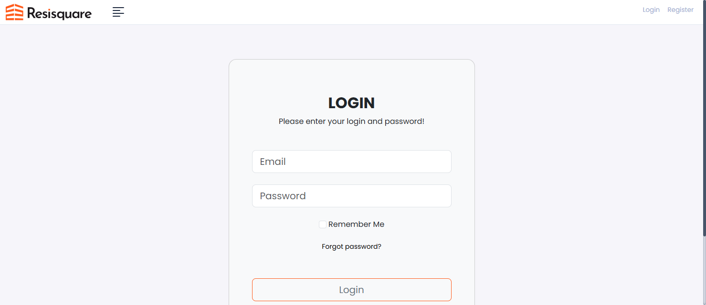
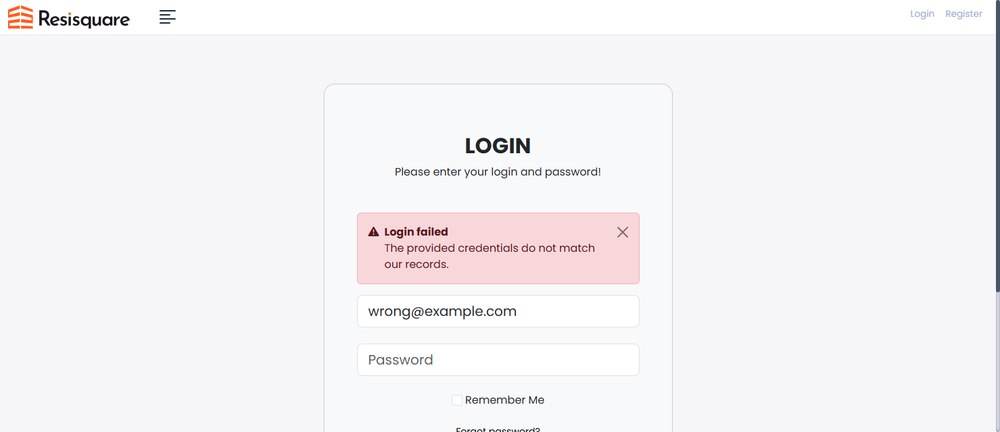
Login — design notes
Works: Quiet card, clear error (“Login failed” + records message), dismiss on the alert.
- Fill the Login button — outline orange on white has weak affordance. Solid brand fill, full width. File: login view / auth CSS.
- Persistent labels — placeholders “Email” / “Password” disappear on type. Use label above field.
- Contrast — header Login/Register, Remember Me, Forgot password are light grey. Aim 4.5:1.
- Public chrome — hamburger on an unauthenticated login page is leftover app chrome. Drop it or replace with marketing links.
- Copy — “Please enter your login and password!” is generic. “Sign in to your landlord account” + sentence-case heading, not LOGIN.
- Document title is “Backend Dashboard” (UX-002) — change to “Sign in | Resisquare”.
Dashboard
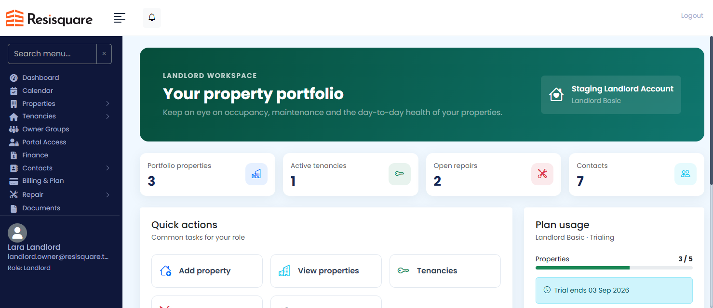
Dashboard — design notes
Works: Role-specific hero, four stats with colour-coded icons, Quick actions, Plan usage bar (3/5).
- Make metric cards links — they already look like tiles. Properties → properties index, tenancies, repairs, contacts. account.blade.php.
- Hero height — “LANDLORD WORKSPACE” plus large title plus empty green field. Shrink padding; sentence case; put plan chip in the header, not a second dark box.
- Do not duplicate destinations — metric “3 properties” and Quick action “View properties” compete. Either clickable metrics or a shorter action row, not both at the same visual weight.
- Trial ends 03 Sep 2026 shown as if the trial is current (BUG-001). When expired, the chip must read Expired, not Trialing, and the banner must force checkout — visual as well as logic.
Calendar
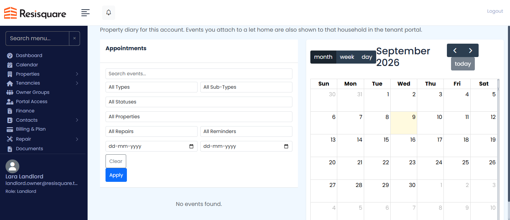
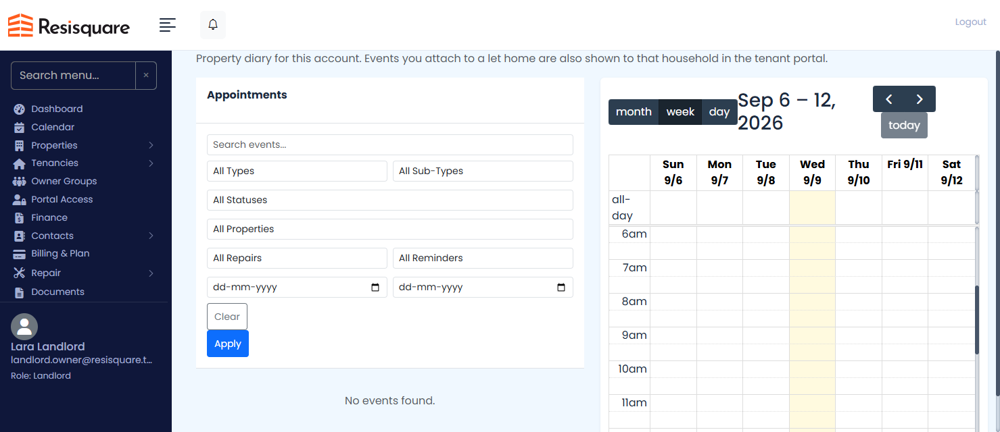
Calendar — design notes
- Primary action missing — a diary without “Add event” in the toolbar is unfinished. Place it top-right of the calendar, not buried in a drag-select gesture.
- Collapse filters when empty — six dropdowns + two dates + Clear/Apply for “No events found” is agency density. Default: collapsed “Filters”, search + Add event visible.
- Empty state in the grid — move “No events found” into the calendar body with Add event. The left column should not be the only empty message.
- Toolbar layout — title, arrows, today, month/week/day fight for one row. Standard: title left, view switcher + today + Add event right.
- Landlord event types should not include Buyer Viewing / Mortgage / Valuation. Locale en-GB. Kill the idle inner scrollbar on the month grid.
Properties workspace
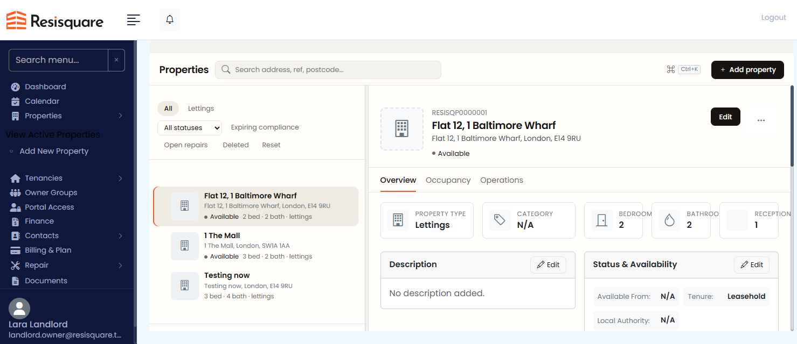
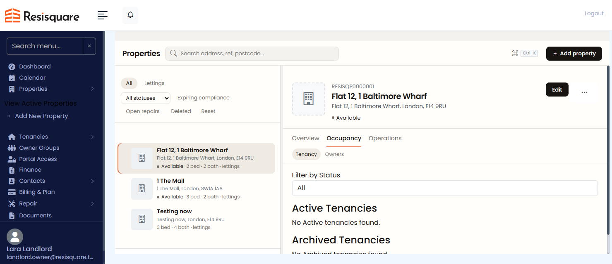
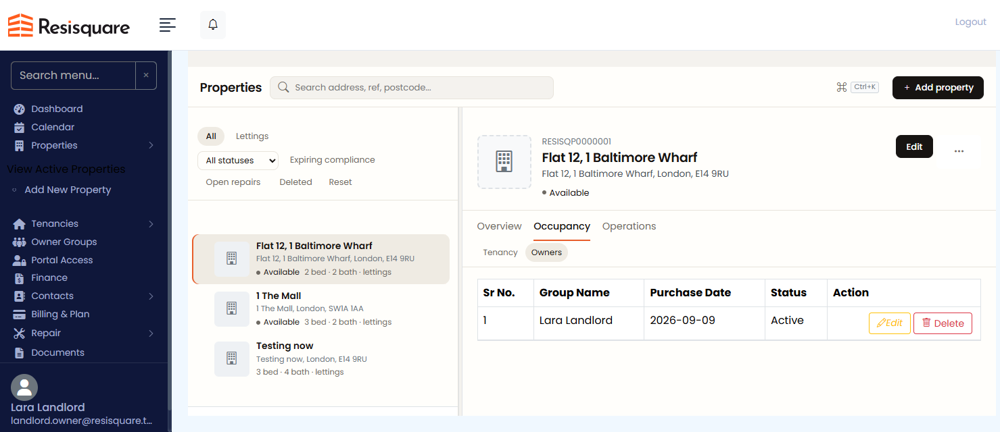
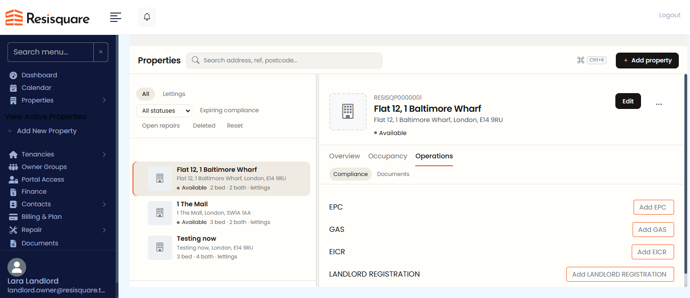
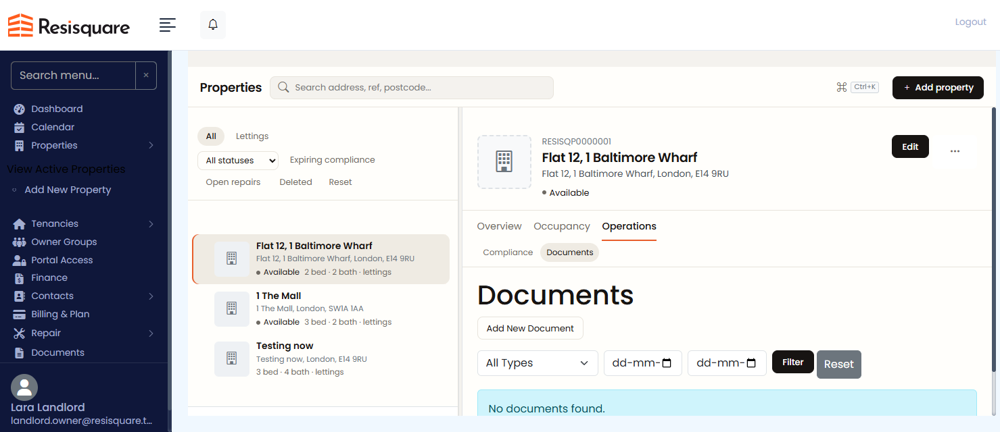
Properties — design notes
Works: Master–detail, orange selected rail, Overview / Occupancy / Operations tabs, search + Ctrl+K, solid Add property.
- Stat row overflow — wrap the five overview chips or use a 3+2 grid so Reception is never clipped.
- Occupancy empty — “No Active tenancies found” should be “No tenancy on this property” + Add tenancy (this also surfaces BUG-002 visually).
- Compliance labels — “Add landlord registration” in title case; same button style as Add EPC.
- Documents empty — hide Type/date filters until there is at least one file. Make Add New Document the filled primary in that pane (and make it work — BUG-004).
- Deleted filter in the list chrome is agency leftover unless landlords can soft-delete.
Add property overlay
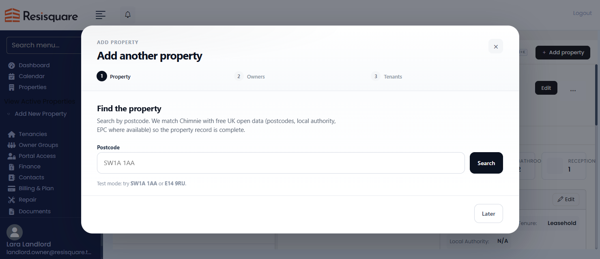
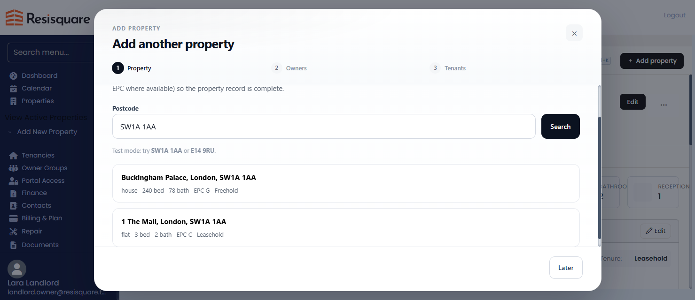
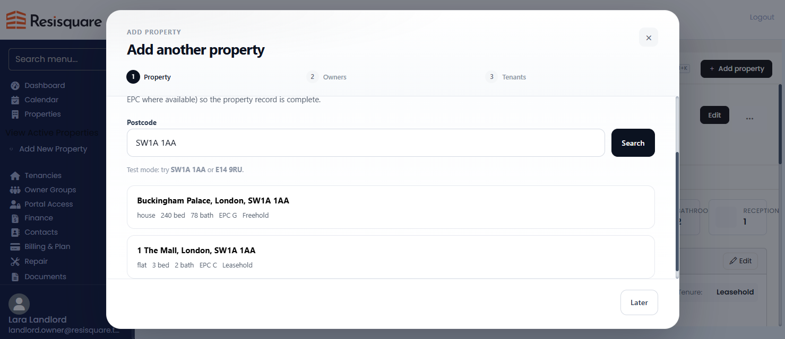
Overlay — design notes
Works: Three-step model, postcode + Search, selectable result cards, duplicate blocked.
- Stop clipping the intro — selected-address / results must not cover “Find the property” copy. landlord-overlay layout / CSS.
- Footer actions — Later is secondary (text or outline left). After a search, primary is choosing a card, not Later on the right.
- Result meta — “house 240 bed 78 bath EPC G Freehold” needs chips: Type · Beds · Baths · EPC · Tenure. Buckingham Palace as 240-bed is a data joke; still format it.
- Replace “Chimnie” with “UK property data”. Pin duplicate alerts to the top of the modal. Hide “Test mode: try SW1A…” in production.
Tenancies
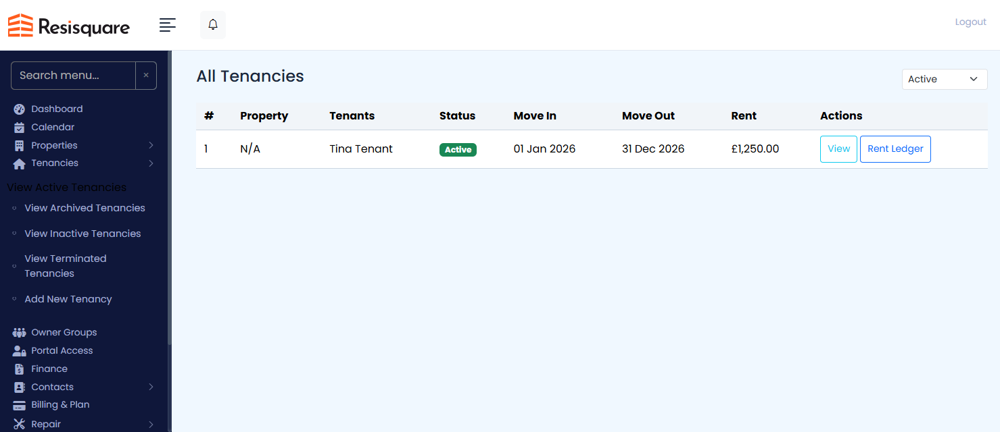

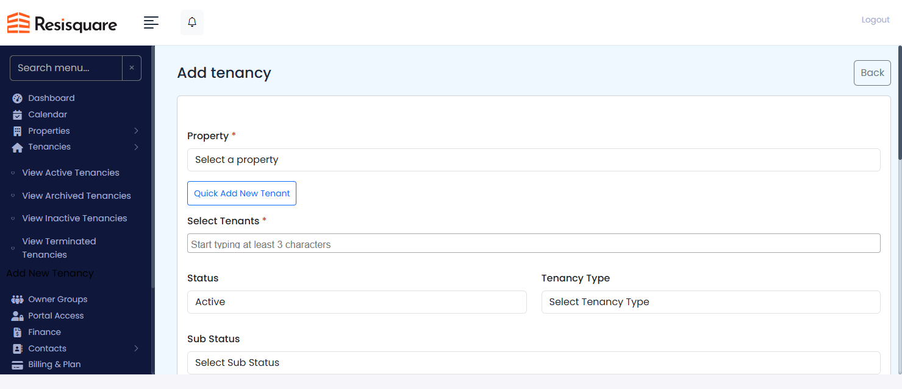
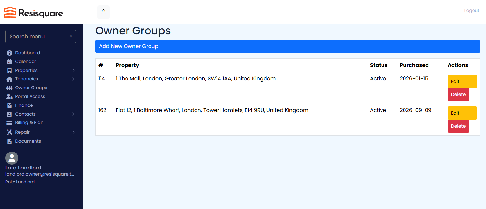
Tenancies — design notes
- Title matches filter — Active filter → “Active tenancies”, not “All Tenancies”.
- Missing property — N/A is too quiet for a broken let. Use a warning chip “No property linked” + Fix.
- Slim the create form — Property, tenants, type, rent, dates. Hide Admin To Approve / Accounts To Process from landlords. Cap form width (~720px) instead of stretching.
- Outline View / Rent Ledger are tight; 8px gap minimum. Prefer one primary View and a overflow for ledger.
Portal, finance, contacts
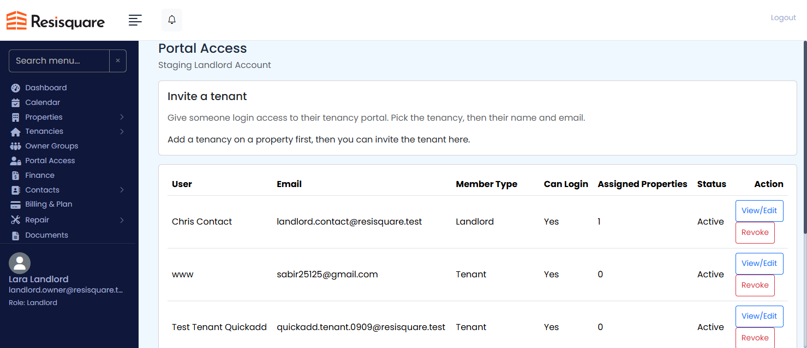
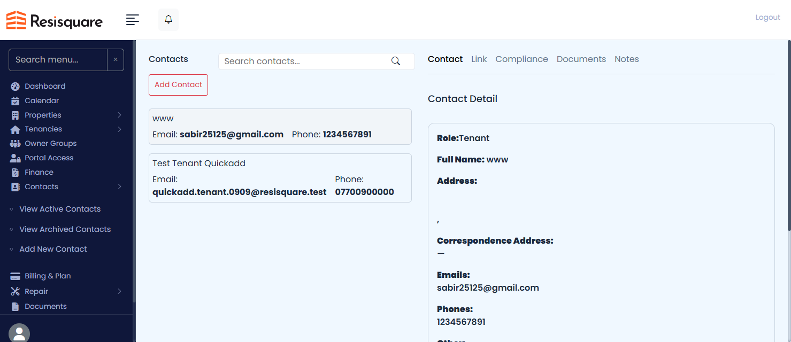
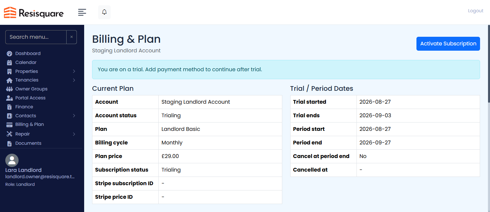
Portal / Finance / Contacts — design notes
- Portal invite — if the form is hidden, do not keep the “Invite a tenant” heading. Show a blocker card + Add tenancy. Put View/Edit and Revoke in one row or a kebab.
- Finance empty — add a primary “Add tenancy” or “Open tenancy #15” so the instruction is actionable. Align with Rent Ledger (UX-021).
- Add Contact = primary — same as + Add property (black/navy/orange solid). Red is revoke only. Tabs Link/Compliance need stronger contrast. One empty glyph (“Not set”), not blank / dash / comma.
Billing and Stripe

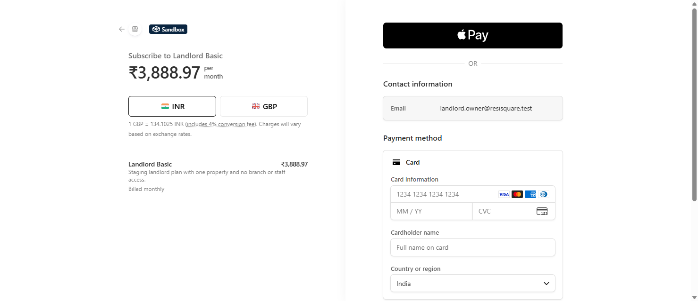
Billing — design notes
- Replace the two tables with a plan card — plan name, £29/month, property usage 3/5, trial/expiry, Activate. Hide Stripe subscription/price IDs from landlords.
- One trial message — hero chip or banner, not title + banner + status + dates all repeating Trialing.
- Checkout currency — lock GBP; default country GB. Plan description must match property_limit (BUG-013).
Repair, documents, profile, 403, notifications
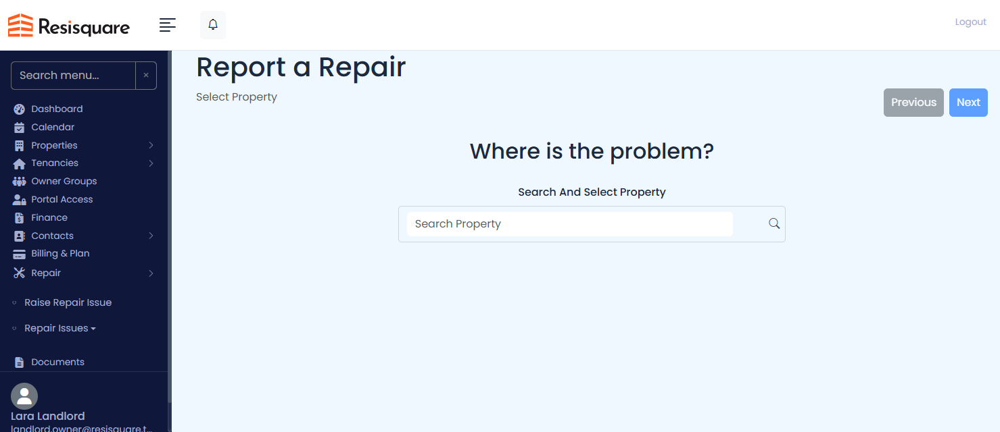
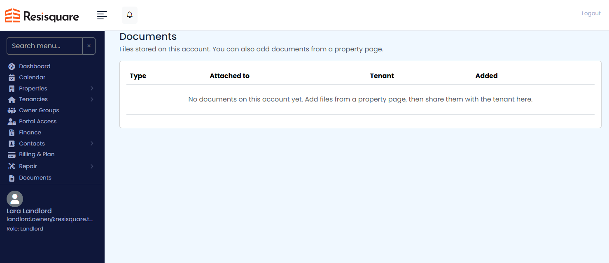
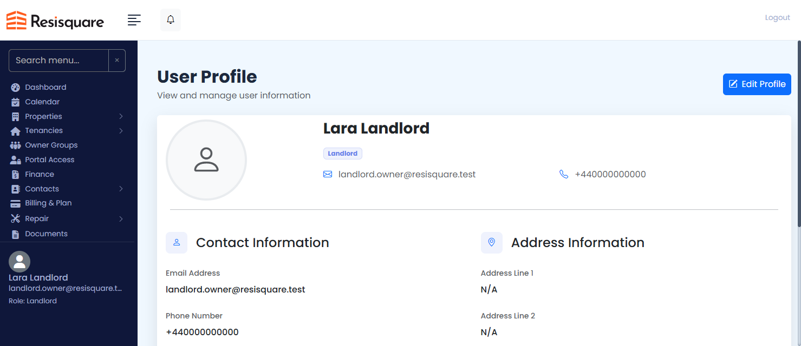
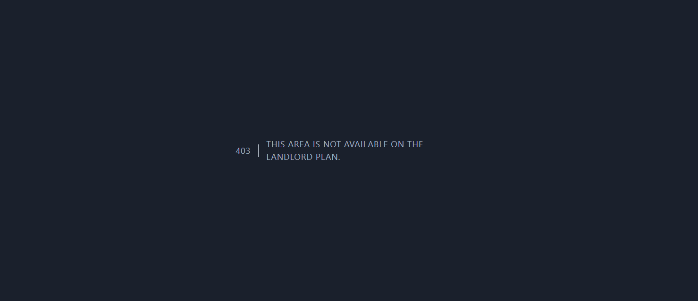

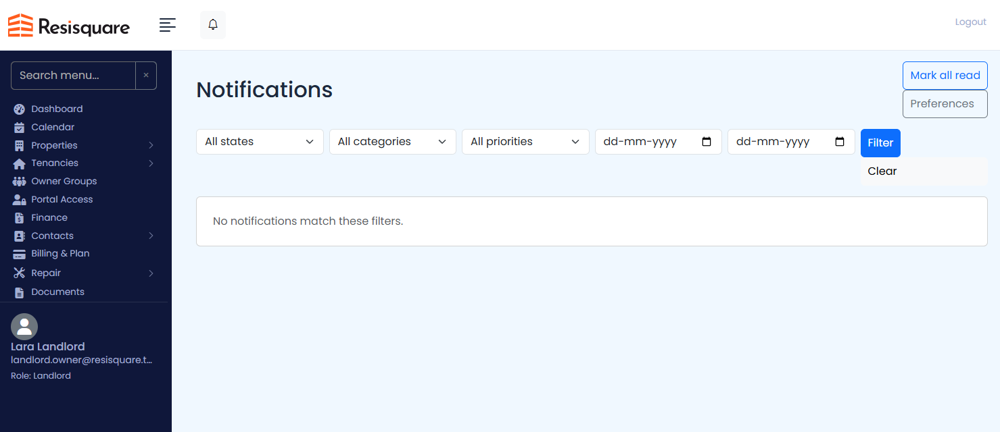
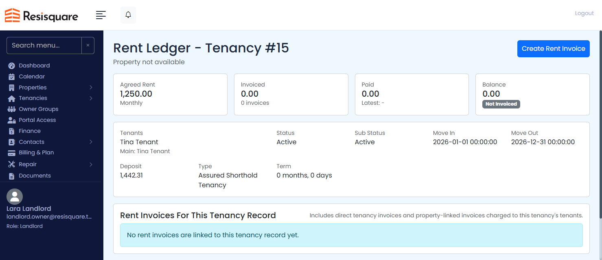
Repair → Notifications — design notes
- Repair wizard — step indicator (1 of n). Stick Previous/Next under the search. Disable Next until a property is selected. Page title owns hierarchy; “Where is the problem?” becomes the field legend.
- 403 — keep app shell. Title: “This page is not on the landlord plan.” Buttons: Back to dashboard, View billing. resources/views errors / RestrictLandlordRoutes response.
- Notifications toolbar — one row: filters + From/To labels + Filter + Clear. Mark all read and Preferences side by side. Empty: “You’re up to date” when unfiltered, not “No notifications match these filters.”
- Profile: join address parts; label Postcode not ZIP Code. Documents index: either add upload here or drop the implication that this page is only a dump of property files.
Suggested UI fix order (after functional blockers)
Do not start these until BUG-001 and BUG-002 are planned. Then:
- Button tokens (UI-FIX-001) so later screens do not keep inventing CTAs.
- Header account menu (UI-FIX-002) + sidebar email/avatar (UI-FIX-007).
- Empty-state component (UI-FIX-004) on calendar, occupancy, finance, documents, portal, notifications.
- Add-property overlay layout (clipping, Later, alerts, result chips).
- Repair wizard geometry + 403 branded page.
- Billing plan card + en-GB dates (UI-FIX-005) + sentence case (UI-FIX-003).
- Contacts/profile empty-data rendering (UI-FIX-008) and N/A treatment.
7. Performance Testing
| ID | Area | Test | Status | Priority | Recommendation |
|---|---|---|---|---|---|
| PF-001 | Login | Resisquare login on :8001 rendered without timeout | Pass | Medium | - |
| PF-002 | Dashboard / module pages | Landlord pages rendered in the browser session | Pass | Medium | - |
| PF-003 | Timing | Numeric TTFB / LCP | Not Tested | - | Not Tested - Measurement unavailable in current environment. |
| PF-004 | N+1 / payload size | Code/runtime profiling | Not Tested | - | Not Tested - Measurement unavailable in current environment. |
8. SEO Testing
| ID | SEO Check | Status | Recommendation |
|---|---|---|---|
| SEO-001 | Login page title | Fail | Title is “Backend Dashboard”. Set a public login title. |
| SEO-002 | 403 page | Fail | Bare “Forbidden” document. Use a branded error page. Authenticated SEO is otherwise Not Applicable. |
9. Content Testing
| ID | Content Check | Status | Recommendation |
|---|---|---|---|
| CT-001 | Invalid login message | Pass | - |
| CT-002 | Duplicate property message | Pass | - |
| CT-003 | Add-tenancy validation messages | Pass | - |
| CT-004 | Onboarding help text clipped / Chimnie | Fail | See BUG-010 and UX-020. |
| CT-005 | Plan description “one property” vs 3/5 usage | Fail | StagingSaasTestDataSeeder / plan description → Match property_limit. |
| CT-006 | Profile Full Address “, , N/A, ,” | Fail | See BUG-011. |
| CT-007 | ZIP Code label | Fail | Use Postcode. |
| CT-008 | Documents modal title “documents” | Fail | documents.blade.php → Capitalise title. |
| CT-009 | Confirm Status Change template “change status to ?” | Fail | Fill the target status in the confirm copy. |
10. Browser & Device Testing
| Browser / Device | Status | Recommendation |
|---|---|---|
| Chrome Desktop (Cursor Chromium) | Pass | - |
| Firefox Desktop | Not Tested | - |
| Edge Desktop | Not Tested | - |
| Safari | Not Tested | - |
| Android Mobile | Not Tested | - |
| iPhone | Not Tested | - |
| Tablet | Not Tested | - |
11. API Testing
| ID | API / Feature | Test | Status | Recommendation |
|---|---|---|---|---|
| API-001 | Onboarding postcode search | GET admin.onboarding.landlord.search for SW1A 1AA returned address cards | Pass | - |
| API-002 | Documents create form | GET /admin/documents/create from Add New Document | Not Tested | UI click never opened the form. See BUG-004. |
12. Database Testing
| ID | Check | Status | Recommendation |
|---|---|---|---|
| DB-001 | Duplicate property address rejected | Pass | - |
| DB-002 | Active tenancy without property_id | Fail | Tenancy 15 violates expected tenancy–property integrity. Add a non-null/required property_id for landlord tenancies or a cleanup job. See BUG-002. |
| DB-003 | Trial end vs account status | Fail | trial_ends_at 2026-09-03 with status still Trialing on 2026-09-09. See BUG-001. |
13. Production / Deployment Testing
| ID | Check | Status | Recommendation |
|---|---|---|---|
| PD-001 | Local app reachable on :8001 | Pass | - |
| PD-002 | Stripe Checkout sandbox reachable | Pass | - |
| PD-003 | Trial expiry enforced | Fail | See BUG-001. Not production-ready while expired trials stay open. |
| PD-004 | HTTPS / production headers | Not Tested | Local HTTP only. |
14. Overall Score
| Category | Weight | Passed / Applicable | Score |
|---|---|---|---|
| Functional | 30% | 27 / 40 | 68% |
| Security | 20% | 5 / 6 | 83% |
| UI/UX | 15% | 8 / 27 | 30% |
| Performance | 15% | 2 / 2 (2 Not Tested excluded) | 100% |
| SEO | 10% | 0 / 2 | 0% |
| Compatibility | 5% | 1 / 1 (others excluded) | 100% |
| Content | 5% | 3 / 9 | 33% |
Weighted overall: 68×0.30 + 83×0.20 + 30×0.15 + 100×0.15 + 0×0.10 + 100×0.05 + 33×0.05 = 63%.
Performance and compatibility scores only reflect the two observed page-load checks and one Chromium desktop pass. They should not be read as a full performance or cross-browser result. Critical trial and tenancy-property defects override any “ready” rating.
15. Final Status
Final Status: Not Ready for Production
Quality rating: Critical (<70%, and unresolved Critical business defects).
Recommendation
- Working: Landlord login, landlord-only sidebar, dashboard, property split view and tabs, postcode search, duplicate-address guard, tenancy list/view/create validation, owner groups, contacts, billing page, Stripe Checkout, repair list, documents empty state, profile, notifications, 403 on Sales Offer.
- Must fix before calling the landlord MVP complete: expired trial still open (BUG-001); Active tenancy with no property blocking Finance and portal invite (BUG-002); Add Document no-op (BUG-004); calendar cannot create events (BUG-005).
- Critical/High remaining: BUG-001 to BUG-009.
- Retesting required after data repair of tenancy 15, trial enforcement, document modal, calendar dateClick, overlay dismiss, and repair search.
- Production deployment is not recommended until those Critical/High items are fixed and retested.
Suggested fix order (do not start until planned): 1) Tenancy–property integrity + Finance/Portal. 2) Trial expiry enforcement. 3) Documents add modal. 4) Calendar create-event. 5) Overlay dismiss + alert visibility. 6) Repair category/search. 7) Design system: button tokens, header account menu, empty states (UI-FIX-001 to 004). 8) Overlay, repair wizard, 403, and billing visual polish. Screenshot-backed notes are in section 6A.
16. Testing Limitations
- No production credentials. Staging landlord on local :8001 only.
- Port 8000 served a different application (Pharm Vet Easy) and was excluded.
- Did not complete Stripe payment (sandbox Checkout opened only).
- Did not complete a new property save (stopped after duplicate-address on 1 The Mall).
- Did not complete raise-repair after property search failed to return a selectable result.
- Did not click Logout, Forgot password, Edit Profile save, Revoke portal access, or Delete property (destructive / session-ending).
- Did not test mobile/tablet/Firefox/Safari/Edge.
- Did not run numeric performance profiling or N+1 analysis.
- Did not run IDOR, XSS, or SQLi beyond observing 403 on /admin/offers.
- No code was changed. This report is a log for later planning.